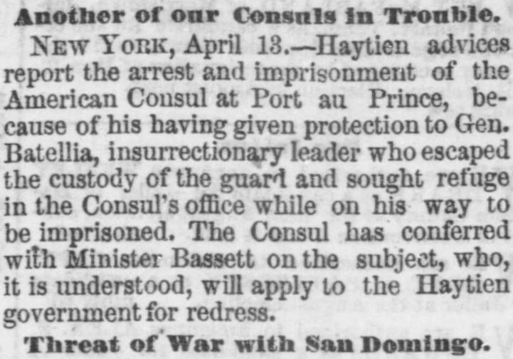
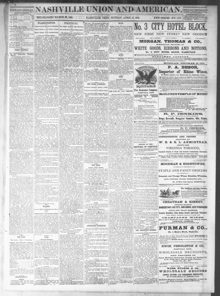

See the full pageVer la página completaBatellia, insurrectionary leader who escaped the custody of the guard andBatellia, dirigente insurreccional que escapó de la custodia de la guardia y
The Nashville Union and American reported on April 14, 1872, that the American consul at Port-au-Prince was arrested and imprisoned for protecting the insurrectionary leader General Batellia, prompting Minister Bassett to seek redress. Additionally, the newspaper noted that the Haytien government would probably declare war against Baez for attempting to overthrow President Saget, following an invasion from Monte Christo that resulted in fourteen executions.El Nashville Union and American dio cuenta el 14 de abril de 1872 de que el cónsul estadounidense en Puerto Príncipe fue arrestado y puesto en prisión por dispensar asilo al caudillo insurrecto general Batellia, lo que llevó al ministro Bassett a exigir debida satisfacción diplomática. Además, el diario apuntó que el gobierno haitiano declararía probablemente la guerra a Báez por intentar derrocar al presidente Saget, luego de una incursión armada procedente de Montecristi que culminó con catorce fusilamientos.
FULL TEXT:TRADUCCIÓN:
HAYTI.HAITÍ.
——
Another of our Consuls in Trouble.Otro de nuestros Cónsules en problemas.
NEW YORK, April 13.—Haytien advices report the arrest and imprisonment of the American Consul at Port au Prince, because of his having given protection to Gen. Batellia, insurrectionary leader who escaped the custody of the guard and sought refuge in the Consul's office while on his way to be imprisoned. The Consul has conferred with Minister Bassett on the subject, who, it is understood, will apply to the Haytien government for redress.NUEVA YORK, 13 de abril.—Noticias haitianas informan la detención y el encarcelamiento del Cónsul estadounidense en Puerto Príncipe, debido a haber dado protección al general Batellia, jefe insurreccional que escapó de la custodia de la guardia y buscó refugio en la oficina del Cónsul mientras era conducido a prisión. El Cónsul ha conferenciado con el ministro Bassett sobre el tema, quien, según se entiende, solicitará reparación al gobierno haitiano.
Threat of War with San Domingo.Amenaza de guerra con Santo Domingo.
PORT AU PRINCE, April 13.—The invasion from Monte Christo consisted of 200 men. Eight Haytiens, five Dominicans, and one Frenchman were captured and executed. It is reliably reported that the Haytien Government will probably declare war against Baez, who is charged with an attempt to overthrow President Saget.PUERTO PRÍNCIPE, 13 de abril.—La invasión desde Monte Christo consistió en 200 hombres. Ocho haitianos, cinco dominicanos, y un francés fueron capturados y ejecutados. Se informa de manera fidedigna que el Gobierno haitiano probablemente declarará la guerra contra Báez, a quien se acusa de un intento de derrocar al presidente Saget.
Nashville Union and American. Nashville, Tenn., April 14, 1872.
See the original at the Library of CongressVer el original en la Biblioteca del Congreso
Published by: J.O. Griffith & Co., 1868-1875.Publicado por: J.O. Griffith & Co., 1868-1875.
Edition: Edition 1Edición: edición 1
Page: 1Página: 1
Frequency: daily (1868–1875)Frecuencia: diario (1868–1875)
Collection: Chronicling America, Library of CongressColección: Chronicling America, de la Biblioteca del Congreso
LCCN: sn85033699LCCN: sn85033699
ISSN: 2166-6105ISSN: 2166-6105
OCLC: 12190398OCLC: 12190398
Rights: public domain, according to the Library of CongressDerechos: dominio público, según la Biblioteca del Congreso